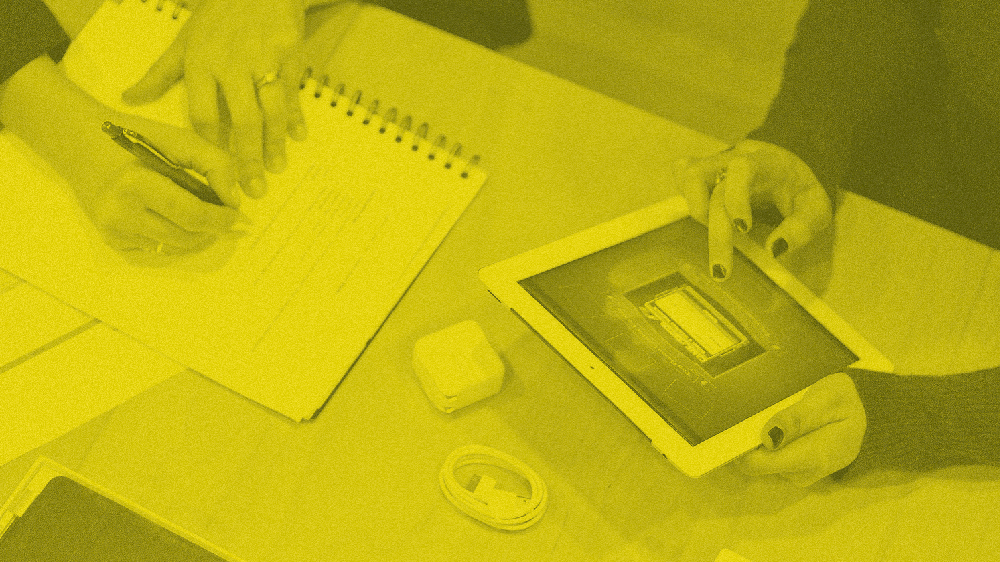

Mental models
Your app might be a technological marvel, but don’t forget that it’s people who need to interact with it. – UXPin team
Mental models are the ‘tools’ you use to think. The way you view the world and everything in it is based on your assumtions and experiences. A mental model is an explanation of a person’s worldview. It incorporates their thought process regarding a subject and seeks to provide a framework for interpretation and explanation of this thought process.
Due to the fact that these mental models shape behaviour it is important to acknowledge them when designing, as they heavily affect the way users will experience your design.
You can either make the system conform to the users mental models or educate users and improve their mental model, so that they for your system.
Read more:
Nielsen Norman Group
Games: Use games to understand complex concepts and to help users elaborate in workshops.
Mental models in industry
Mental models is a big part of many industries. Methods such as: Card sorting, usability testing, user interviews, focus groups, surveys etc. all contribute to insights about users or buyers mental models. A way communicate the mental models and share it with stakeholders within the firm is personas.
The company Aamplify, was contracted by Deloitte Private, the division of Deloitte Consulting that specializes in families and small businesses, to develop a marketing plan.
The firm started by interviewing people who had recently evaluated solutions like theirs, modeling the buyers’ decision to uncover clear, factual insights about how they compared Deloitte to its competitors.
When Deloitte saw the details that these personas revealed, it was easy to identify the targeted messaging and marketing content that would persuade their buyers to choose them. And it was simple to help the sales teams see how to tell those same powerful stories to their customers.
Usability test: An UI-designer is monitoring while interviewing a respondent testing an app.
Mental models at DMD
Whenever you are designing for a user, you would want consider their mental models. There is as mentioned a number of methods to access and understand a users mental model. In this project a group of students explored how people perceive interactive shadows in an architectural space.
To understand this, they built a prototype and set up a series of experiments with follow-up expert interviews based on the pragmatist aesthetics framework.
The research indicated that the prototype is capable of affecting the atmosphere in a room through a dynamic relationship with the user, and that it changed their mental model of a plant as they felt that i gave the plant a personality.